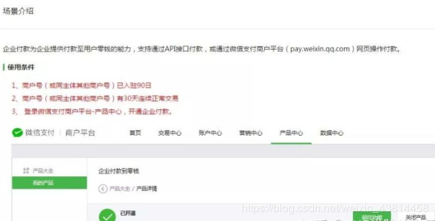
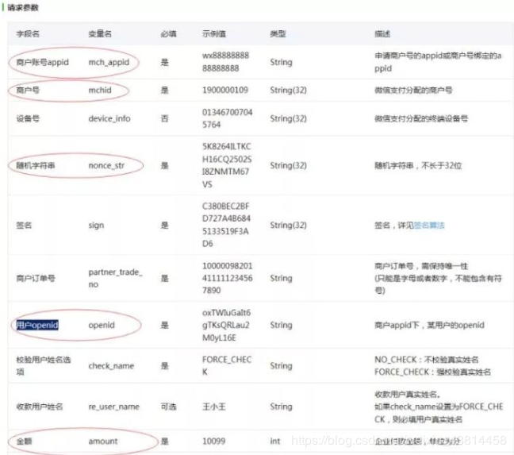
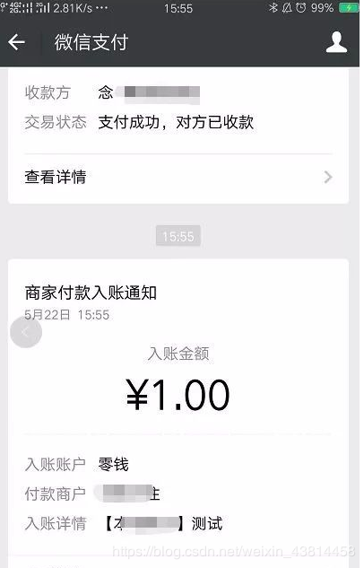
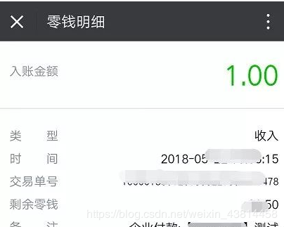

原文连接:https://www.cnblogs.com/a609251438/p/11885771.html
微信支付企业付款到零钱功能应用广泛，比如微信红包奖励，业务结算等。通过企业向个人付款，付款资金将直接进入用户微信零钱。
一 开通条件

付款资金
企业付款到零钱资金使用商户号余额资金。
根据商户号的账户开通情况，实际出款账户有做区别：
◆ 默认情况下，企业付款到零钱使用商户号基本户（或余额账户）余额。如商户号已开通运营账户，则企业付款到零钱使用运营账户内的资金。
◆ 基本户（或上述其他出款账户）的资金来源，可能是交易结算款项（仅基本户），或给账户充值的资金。当出款账户余额不足时，付款将因余额不足而付款失败。
付款规则
付款方式
◆ 支持API接口或网页操作，付款至目标用户。
收款用户身份指定
◆ 通过APPID+OPENID指定收款用户。
◆ APPID需要为申请商户号时的APPID，或者与商户号有绑定关系。
◆ OPENID的获取方式，可参照：https://mp.weixin.qq.com/wiki?t=resource/res_main&id=mp1421140839
付款额度
◆ 不支持给非实名用户打款
◆ 给同一个实名用户付款，单笔单日限额2W/2W
◆ 一个商户同一日付款总额限额100W
注意：以上规则中的限额2w、100w由于计算规则与风控策略的关系，不是完全精确值，金额仅做参考，请不要依赖此金额做系统处理，应以接口实际返回和查询结果为准，请知晓。
收款用户身份校验
◆ 针对付款的目标用户，提供可校验真实姓名的功能
查询付款情况
◆ 已付款的记录，企业可通过企业付款查询查看相应数据，或者查询商户号资金流水。
付款频次
◆ 默认每天最多可向同一个用户付款10次，可以在商户平台--API安全进行设置
其他注意事项
◆ 付款金额必须小于或等于商户当前可用余额的金额；
二 接口地址
接口链接：https://api.mch.weixin.qq.com/mmpaymkttransfers/promotion/transfers
请求参数：
具体参看官方企业付款开发文档说明

1.基本配置
1 //公众账号appid
2 $data["mch_appid"] = 'appid';
3 //商户号
4 $data["mchid"] = '';
5 //随机字符串
6 $data["nonce_str"] = 'suiji'.mt_rand(100,999);
7 //商户订单号
8 $data["partner_trade_no"]=date('YmdHis').mt_rand(1000,9999);
9 //金额 用户输入的提现金额需要乘以100
10 $data["amount"] = $money;
11 //企业付款描述
12 $data["desc"] = '企业付款到个人零钱';
13 //用户openid
14 $data["openid"] = $openid;
15 //不检验用户姓名
16 $data["check_name"] = 'NO_CHECK';
17 //获取IP
18 $data['spbill_create_ip']=$_SERVER['SERVER_ADDR'];
19 //商户密钥
20 $data['key']='';
21 //商户证书 商户平台的API安全证书下载
22 $data['apiclient_cert.pem']
23 $data['apiclient_key.pem']
2.PHP代码
1 /**
2 **开始支付
3 /
4 public function userpay(){
5 $money = ‘用户输入提现金额';
6 $info['money'] = ‘用户余额';
7 if ($this->openid && $money){
8 if ($money>$info['money'] ){
9 echo json_encode([
10 'status' => 1,
11 'message' => '余额不足，不能提现！',
12 'code'=>'余额不足，不能提现！'
13 ]);
14 }elseif ($money<1){
15 echo json_encode([
16 'status' => 2,
17 'message' => '提现金额不能小于1元',
18 'code'=>'提现金额太低'
19 ]);
20 }else{
21 $openid = $this->openid;
22 $trade_no = date('YmdHis').mt_rand(1000,9999);
23 $res = $this->pay($openid,$trade_no,$money*100,'微信提现');
24
25 //结果打印
26 if($res['result_code']=="SUCCESS"){
27
28 echo json_encode([
29 'status' => 3,
30 'message' => '提现成功！',
31 ]);
32 }elseif ($res['err_code']=="SENDNUM_LIMIT"){
33 echo json_encode([
34 'status' => 4,
35 'message' => '提现失败！',
36 'code'=>'每日仅能提现一次',
37 ]);
38 }else{
39 echo json_encode([
40 'status' => 5,
41 'message' => '提现失败！',
42 'code'=>$res['err_code'],
43 ]);
44 }
45 }
46 }else{
47 echo json_encode([
48 'status' => 5,
49 'message' => '未检测到您当前微信账号~',
50
51 ]);
52 }
53 }
支付方法
1 /**
2 *支付方法
3 /
4 public function pay($openid,$trade_no,$money,$desc){
5 $params["mch_appid"]='';
6 $params["mchid"] = '';
7 $params["nonce_str"]= 'suiji'.mt_rand(100,999);
8 $params["partner_trade_no"] = $trade_no;
9 $params["amount"]= $money;
10 $params["desc"]= $desc;
11 $params["openid"]= $openid;
12 $params["check_name"]= 'NO_CHECK';
13 $params['spbill_create_ip'] = $_SERVER['SERVER_ADDR'];
14
15 //生成签名
16 $str = 'amount='.$params["amount"].'&check_name='.$params["check_name"].'&desc='.$params["desc"].'&mch_appid='.$params["mch_appid"].'&mchid='.$params["mchid"].'&nonce_str='.$params["nonce_str"].'&openid='.$params["openid"].'&partner_trade_no='.$params["partner_trade_no"].'&spbill_create_ip='.$params['spbill_create_ip'].'&key=商户密钥';
17
18 //md5加密 转换成大写
19 $sign = strtoupper(md5($str));
20 //生成签名
21 $params['sign'] = $sign;
22
23 //构造XML数据
24 $xmldata = $this->array_to_xml($params); //数组转XML
25 $url='https://api.mch.weixin.qq.com/mmpaymkttransfers/prom otion/transfers';
26
27 //发送post请求
28 $res = $this->curl_post_ssl($url, $xmldata); //curl请求
29 if(!$res){
30 return array('status'=>1,
31 'msg'=>"服务器连接失败" );
32 }
33
34 //付款结果分析
35 $content = $this->xml_to_array($res); //xml转数组
36 return $content;
37 }
curl请求
1 /**
2 * curl请求
3 /
4 public function curl_post_ssl($url, $xmldata, $second=30,$aHeader=array()){
5 $ch = curl_init();
6 //超时时间
7 curl_setopt($ch,CURLOPT_TIMEOUT,$second);
8 curl_setopt($ch,CURLOPT_RETURNTRANSFER, 1);
9 //这里设置代理，如果有的话
10 //curl_setopt($ch,CURLOPT_PROXY, '10.206.30.98');
11 //curl_setopt($ch,CURLOPT_PROXYPORT, 8080);
12 curl_setopt($ch,CURLOPT_URL,$url);
13 curl_setopt($ch,CURLOPT_SSL_VERIFYPEER,false);
14 curl_setopt($ch,CURLOPT_SSL_VERIFYHOST,false);
15
16 //默认格式为PEM，可以注释
17 curl_setopt($ch,CURLOPT_SSLCERTTYPE,'PEM');
18 //绝对地址可使用 dirname(__DIR__)打印，如果不是绝对地址会报 58 错误
19 curl_setopt($ch,CURLOPT_SSLCERT,' 绝对地址/apiclient_cert.pem');
20 curl_setopt($ch,CURLOPT_SSLKEYTYPE,'PEM');
21 curl_setopt($ch,CURLOPT_SSLKEY,'绝对地址/apiclient_key.pem');
22 if( count($aHeader) >= 1 ){
23 curl_setopt($ch, CURLOPT_HTTPHEADER, $aHeader);
24 }
25 curl_setopt($ch,CURLOPT_POST, 1);
26 curl_setopt($ch,CURLOPT_POSTFIELDS,$xmldata);
27 $data = curl_exec($ch);
28 if($data){
29 curl_close($ch);
30 return $data;
31 }
32 else {
33 $error = curl_errno($ch);
34 echo "call faild, errorCode:$error\n";
35 die();
36 curl_close($ch);
37 return false;
38 }
39 }
生成签名
1 /**
2 * array 转 xml
3 * 用于生成签名
4 */
5 public function array_to_xml($arr){
6 $xml = "<xml>";
7 foreach ($arr as $key => $val) {
8 if (is_numeric($val)) {
9 $xml .= "<" .$key.">".$val."</".$key.">";
10 } else
11 $xml .= "<".$key."><![CDATA[".$val."]]></".$key.">";
12 }
13 $xml .= "</xml>";
14 return $xml;
15 }
16
17 /**
18 * xml 转化为array
19 */
20 public function xml_to_array($xml){
21 //禁止引用外部xml实体
22 libxml_disable_entity_loader(true);
23 $values = json_decode(json_encode(simplexml_load_string($xml, 'SimpleXMLElement', LIBXML_NOCDATA)), true);
24 return $values;
25 }
效果如下：


- 很多PHPer在进阶的时候总会遇到一些问题和瓶颈，业务代码写多了没有方向感，不知道该从那里入手去提升，对此我整理了一些资料，包括但不限于：分布式架构、高可扩展、高性能、高并发、服务器性能调优、TP6，laravel，YII2，Redis，Swoole、Swoft、Kafka、Mysql优化、shell脚本、Docker、微服务、Nginx等多个知识点高级进阶干货需要的可以免费分享给大家，需要的加群（点击→）677079770